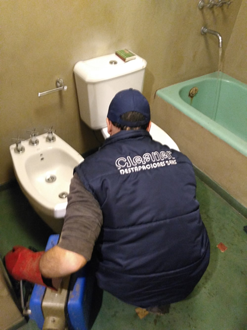
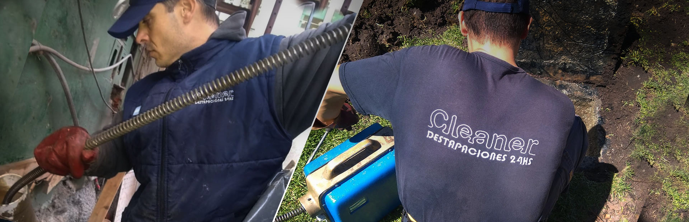
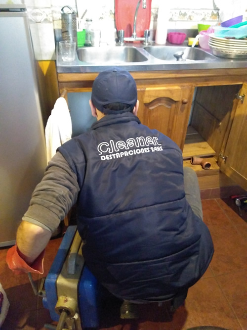
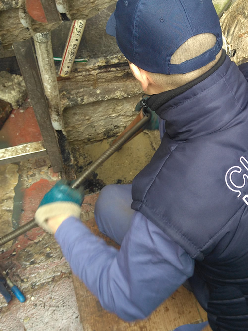
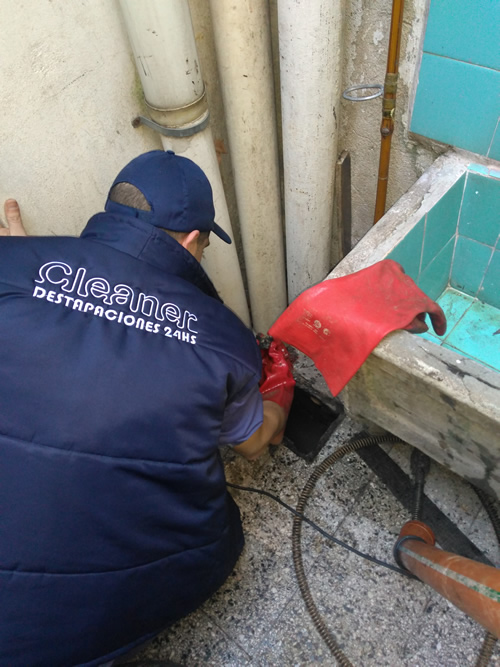
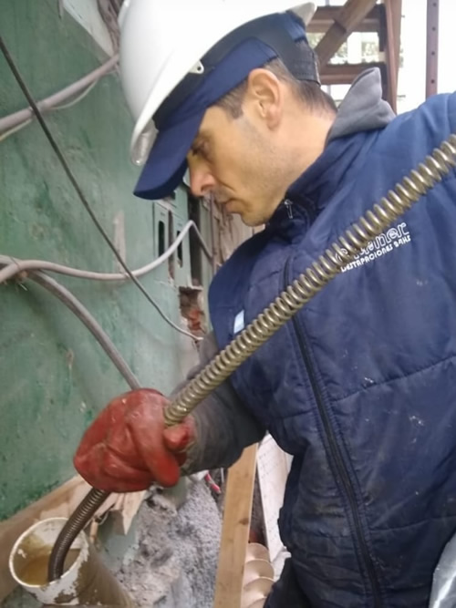
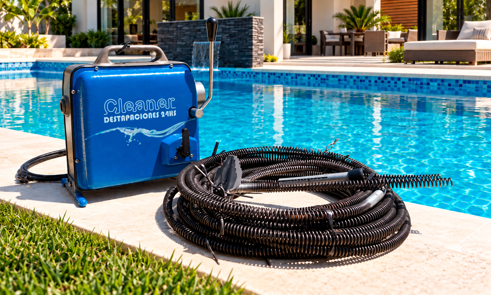

BAÑOS
Destapaciones de baños e inodoros
Atención de desagües de baños, inodoros, lavamanos, bidets, bañeras y rejillas cuando el agua no circula correctamente.
Consultar por baño o inodoro
DESTAPACIONES DE URGENCIA · ATENCIÓN 24 HS
¿Se tapó el baño, la cocina o una cañería? Atendemos desobstrucciones de cloacas, inodoros, cámaras, columnas y desagües pluviales. Consultá disponibilidad para tu zona.
Contanos qué se tapó y en qué barrio estás.
¿QUÉ SE TAPÓ?
Recuperá el uso de tu instalación con una evaluación acorde al tipo de obstrucción, el acceso y el estado de la cañería. Elegí el problema para consultar por WhatsApp.
Inodoro tapado, ducha que no desagota, rejilla obstruida o rebalse.
Consultar baño e inodoro → 02Bacha que no escurre, pileta tapada, retorno de agua o desagüe lento.
Consultar cocina y lavadero → 03Caño cloacal, cámara de inspección o columna general obstruida.
Consultar cloacas → 04Agua acumulada en patios, terrazas, balcones, canaletas o sumideros.
Consultar pluviales →SERVICIO DE DESTAPACIONES
Cleaner Destapaciones trabaja para hogares, comercios, consorcios, empresas e instituciones. La intervención se define según la instalación y el problema informado.

BAÑOS
Atención de desagües de baños, inodoros, lavamanos, bidets, bañeras y rejillas cuando el agua no circula correctamente.
Consultar por baño o inodoro
COCINAS Y LAVADEROS
Desobstrucción mecánica de cañerías de desagüe, bachas, piletas, rejillas y lavaderos con acumulación o retorno.
Consultar por cocina o lavadero
EDIFICIOS
Servicios de desobstrucción para cámaras de inspección, columnas y tramos comunes de edificios y consorcios.
Consultar por cámaras o columnas
DESAGÜES PLUVIALES
Consultas e intervenciones en desagües pluviales de patios, terrazas, balcones, canaletas y sumideros.
Consultar por desagüe pluvial
COMERCIOS E INSTITUCIONES
Atención de instalaciones sanitarias de uso frecuente en comercios, restaurantes, hoteles, escuelas y empresas.
Consultar urgencia comercialCONSORCIOS Y EMPRESAS
Destapaciones de caños, cloacas y pluviales para empresas, administraciones de consorcios e instituciones.
Consultar para empresa o consorcioCÓMO TRABAJAMOS
La información que nos brindes ayuda a comprender el problema y coordinar el servicio según tu zona, instalación y disponibilidad.
Qué instalación está afectada, desde cuándo y en qué barrio o localidad.
Consideramos el tipo de obstrucción, el acceso y las condiciones informadas.
Consultá disponibilidad, alcance y cómo se presupuesta el servicio para tu caso.

EQUIPAMIENTO Y EXPERIENCIA
Cleaner Destapaciones es una empresa familiar con más de diez años de trayectoria declarada en el rubro. Para destapaciones mecánicas utiliza equipos como la máquina rotativa COFAHE C-150, cuando el tipo de instalación, el acceso y la obstrucción son compatibles.
El objetivo es abordar la obstrucción buscando evitar roturas innecesarias, siempre de acuerdo con el estado real de la instalación.
Hablar con un especialista →COBERTURA
Atendemos consultas en la Ciudad Autónoma de Buenos Aires y zonas del Gran Buenos Aires. La cobertura exacta y la disponibilidad se confirman según el barrio o localidad.
Escribinos tu barrio o localidad y contanos qué se tapó.
Confirmar coberturaCONSORCIOS Y EMPRESAS
Las obstrucciones en cámaras, columnas y tramos generales pueden afectar a varias unidades. Atendemos consultas de administraciones, encargados, comercios, empresas e instituciones.
Intervenciones puntuales
Describinos el sector afectado para evaluar el servicio.
Mantenimiento programado
Consultá condiciones y alcance para tu propiedad.
PREGUNTAS FRECUENTES
Respondemos las dudas más comunes sin prometer condiciones que dependen de la instalación y la zona.
El precio de destapaciones depende del problema, la instalación, el acceso y el alcance del trabajo. Escribinos qué se tapó y dónde para consultar cómo se presupuesta tu caso.
La empresa anuncia atención de urgencias 24 horas. Consultá disponibilidad real para tu zona y el momento en que necesitás el servicio.
Sí. Cleaner Destapaciones utiliza maquinaria profesional como la máquina rotativa COFAHE C-150, según el tipo de obstrucción, el acceso y las condiciones de la cañería.
Sí, se atienden consultas en CABA, incluyendo Villa Devoto, Villa del Parque, Palermo, Recoleta y Villa Crespo. La disponibilidad se confirma al indicar el barrio.
No. Cleaner Destapaciones no realiza desagote de pozos ciegos. El foco del servicio son las desobstrucciones mecánicas de cañerías y desagües dentro del alcance informado.
Escribinos por WhatsApp con la ubicación, el tipo de instalación y los sectores afectados. También podés consultar por mantenimiento programado.
ATENCIÓN DIRECTA
Contanos qué instalación está afectada y dónde necesitás el servicio. Consultá disponibilidad para CABA y zonas de GBA.